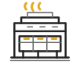
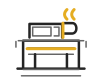
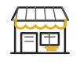
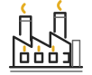
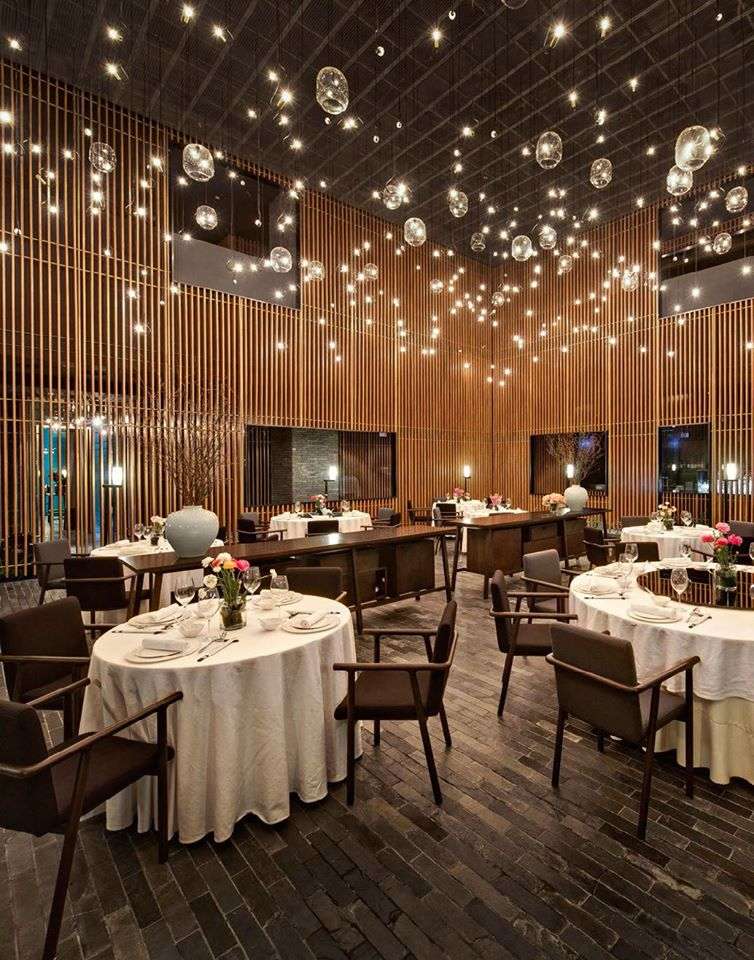
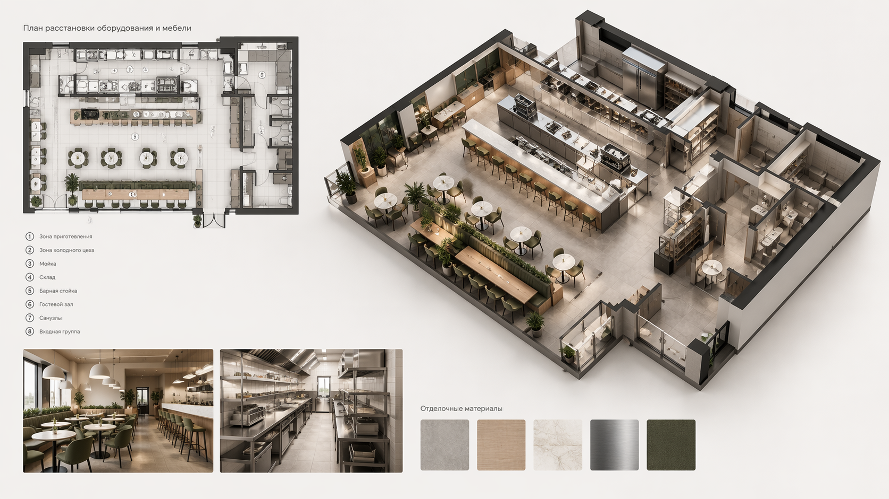
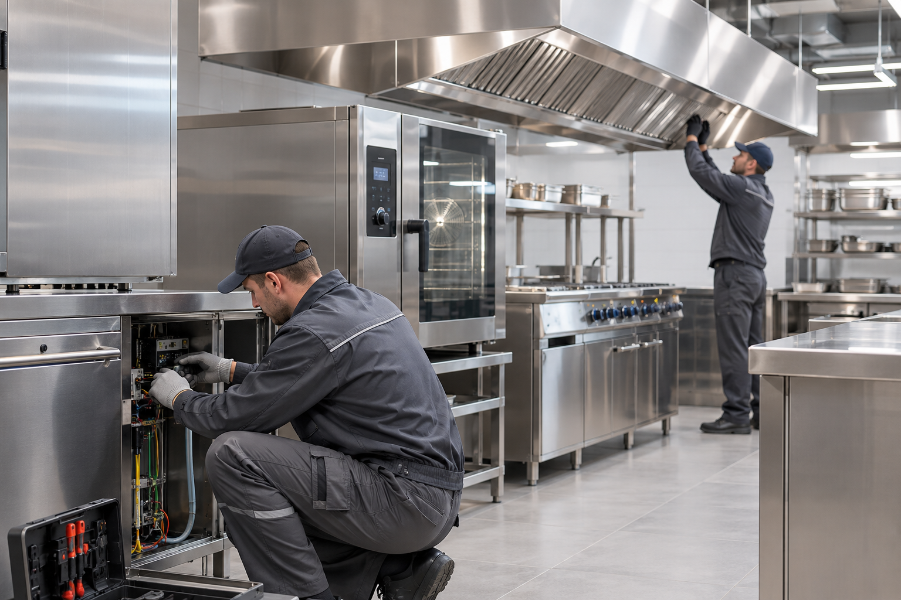
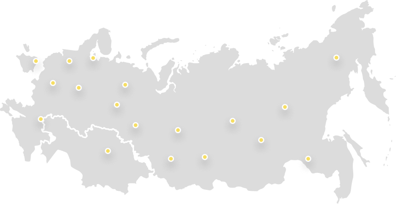
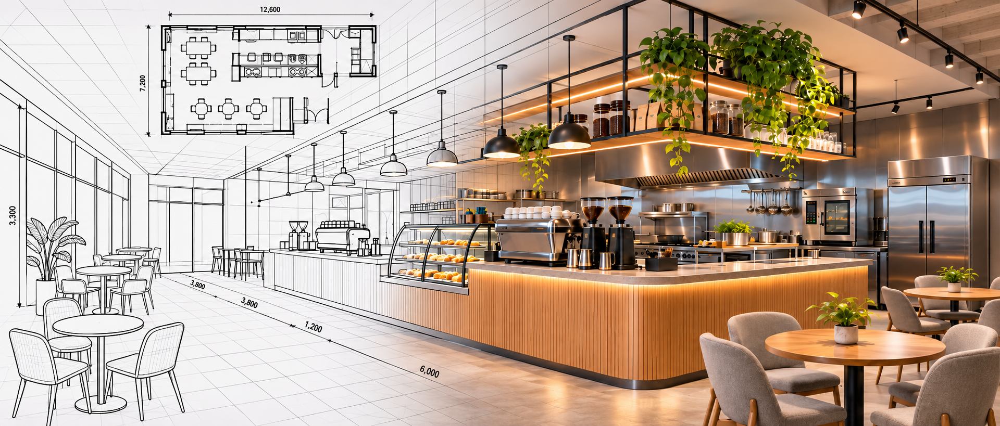
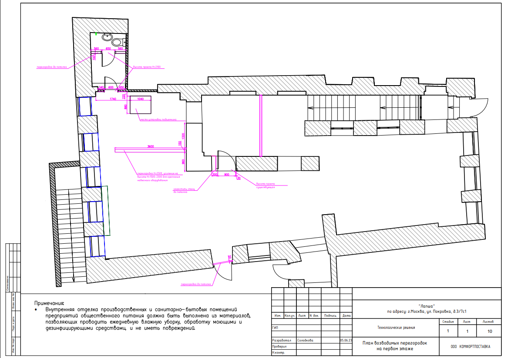

Ресторан на 50 мест
Проектируем профессиональные пространства
Комплексные решения — от идеи до готового объекта
Заказать проект-
Разрабатываем технологические и инженерные решения для заведений общепита всех видов, производственных магазинов и пищевых производств
-
Сделаем проект с учетом формата заведения, площади и расположения помещения, меню и производственных процессов, требований контролирующих органов
-
Осуществляем полный цикл работ — от создания проекта до запуска вашего заведения в работу, с поставкой оборудования, мебели, посуды и инвентаря
Разработка технологического проекта
Технологический проект основа эффективной работы кухни. Мы учитываем все детали: от планировки и оборудования до логистики потоков.
Разрабатываем проект с учётом специфики бизнеса, особенностей помещения и планируемых производственных процессов:
- Анализ потребностей и особенностей вашего бизнеса
- Разработка оптимальной схемы и подбор оборудования
- Проектирование инженерных систем
- Согласование документации и сопровождение реализации
- Узнать больше о проектировании

Подбор оборудования с учётом бюджета и расчёт сметы
Подбираем профессиональное оборудование для приготовления, хранения, обработки и реализации продуктов. Учитываем не только стоимость техники, но и её производительность, функциональные возможности, энергопотребление и условия дальнейшей эксплуатации. Для небольшого кафе и крупного пищевого производства требуются разные решения.
Состав оборудования определяем исходя из задач конкретного объекта, а не по универсальному перечню. При подборе оборудования обращаем внимание на соответствие производительности планируемой нагрузке, возможность размещения техники в имеющемся помещении, требования к подключению и эксплуатации, стоимость оборудования и доступный бюджет.
Любой объект с учетом задач и масштаба
-
Рестораны и кафе
-

Столовые и пищеблоки
-

Бары и кофейни
-

Продовольственные магазины
-

Пищевые производства
-
Гостиницы и отели
Зонирование и план расстановки оборудования и мебели
Правильная организация пространства особенно важна на профессиональной кухне, где одновременно выполняется множество операций. Необходимо предусмотреть места для приёмки и хранения продуктов, подготовки ингредиентов, приготовления блюд, мойки посуды и других рабочих процессов.

- Разрабатываем план расстановки технологического оборудования и мебели с учётом размеров помещения и особенностей работы заведения. Определяем расположение рабочих поверхностей, холодильных и тепловых установок, производственных столов, стеллажей и другого оснащения.
- Отдельное внимание уделяем маршрутам движения персонала, продуктов, готовых блюд и использованной посуды. Продуманное зонирование помогает сократить лишние перемещения, обеспечить удобный доступ к оборудованию и рационально использовать доступную площадь.

- Электрика
- Водоснабжение
- Вентиляция
- Канализация
Привязка оборудования к инженерным коммуникациям
Профессиональное оборудование предъявляет определённые требования к инженерным системам помещения. Поэтому ещё на стадии проектирования необходимо предусмотреть точки подключения и технические условия для его установки.
В зависимости от состава оборудования определяем требования к:
- Электроснабжению — мощности, нагрузкам и расположению точек подключения.
- Водоснабжению и канализации — подаче воды и организации слива.
- Вентиляции — удалению тепла, пара и загрязненного воздуха.
- Другим коммуникациям, необходимым для работы выбранной техники.

Дизайн-проект и 3D-моделирование
Создаём дизайн-проект с учётом концепции заведения, его планировки и функционального назначения помещений. Продумываем размещение мебели и оборудования, чтобы интерьер отвечал визуальным предпочтениям заказчика и практическим требованиям бизнеса.
С помощью 3D-моделирования можно заранее увидеть, как будет выглядеть пространство после реализации проекта: оценить расположение основных элементов и организацию отдельных зон.
Монтаж и сервисное обслуживание оборудования
Организуем доставку оборудования на объект, выполняем монтаж и пусконаладочные работы. При установке учитываем технические требования выбранных моделей и условия их размещения.
После запуска оборудования обеспечиваем сервисное обслуживание. Своевременная диагностика и техническое обслуживание помогают поддерживать работоспособность техники и снижать риск незапланированных простоев.
От проекта до оснащённого объекта
Обратитесь в «Рефро», чтобы обсудить задачи вашего заведения. Поможем определить состав необходимого оборудования, подготовить проектные решения и рассчитать бюджет оснащения.
Получить консультацию
Документация и пояснительные записки для государственных органов
Мы берем на себя подготовку всей необходимой документации и согласование проекта с контролирующими органами. Вы получаете готовый комплект документов и уверенность в соответствии нормам.
- Подготовка проектной и рабочей документации
- Согласование в государственных службах
- Сопровождение на всех этапах


-
Работаем по всей РФ
Разрабатываем проекты для предприятий общественного питания, торговли и пищевых производств независимо от региона расположения объекта.
-
Доставляем оборудование до объекта
Организуем поставку подобранного оборудования непосредственно на объект заказчика.
-
Содействуем в одобрении лизинга
Помогаем с оформлением заявки на лизинг оборудования для снижения первоначальных затрат на открытие заведения.
Проекты, создаваемые нами, выполняют основные задачи
- оптимальное использование площади,
- минимизация стоимости эксплуатации объекта,
- снижение затрат на открытие,
- соответствие нормам (в том числе НАССР) по санитарии, пожарной безопасности, требованиям Ростехнадзора.
Предложим оборудование, которое справится с поставленными задачами — качество готовки, безопасность хранения, необходимая производительность.

Реализованные проекты
Смотреть большеПримеры технологических проектов
